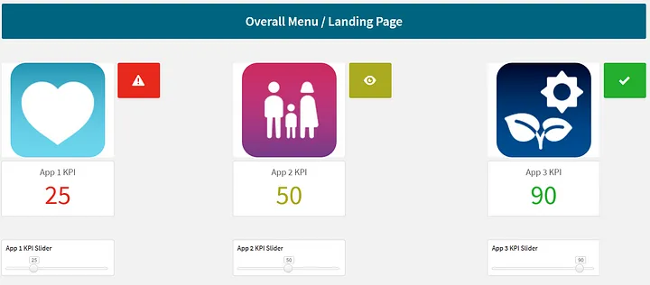
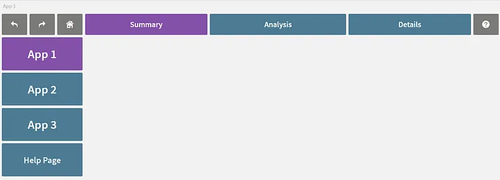
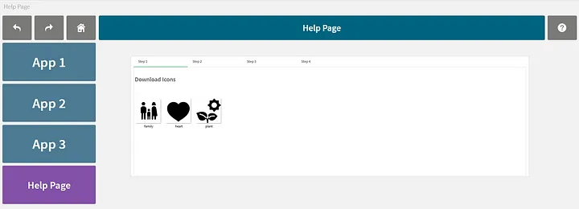
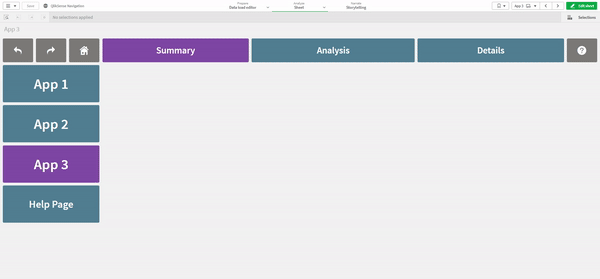

Some ideas on enhancing User Experience on Qlik Sense
Introduction
After the successful delivery of a data analytics product, a common challenge faced is to enhance user adoption. One of the definitions of user adoption from an Indeed article is as follows:
User adoption rates are important because they tell a company or business how many users like the new product or version and how many don’t like it or do not try it. Most often, a higher adoption rate means a customer finds both value and ease in using the new product or version. Conversely, if a customer finds it requires too much effort to use or doesn’t add value, they may abandon the product altogether or stay with an older version.
https://www.indeed.com/career-advice/career-development/user-adoption
One of the necessary ingredients to a successful adoption is the user experience on the interface. In this article, I would like to cover on ways we have found useful to make dashboards on Qlik Sense Apps more intuitive and user friendly.
The three areas I would like to cover are as follows:
- Menu Page for holistic view of overall health of business

- Navigation Bars for navigating between apps and within each app

- Online Help and Information

The Qlik Sense demo app can be found in the following Github link:
https://github.com/ZS-Weng/QlikSense/blob/main/QlikSense%20Navigation.qvf
Online Help and Information
In many projects, often training materials are shared in PowerPoint decks or word documents. These documents might not be easily accessible to every user and it may become challenging at times for users to find the right reference guide when they need help while navigating an analytics app. In our projects, we recommend for the help pages to be built in within as an accompanying sheet or app so that it will be online together with the analytics product.

Conclusion
In this article, I have aimed to share how user experience can be enhanced on Qlik Sense applications with out of the box capabilities.
Any further enhancements will likely require tools beyond the application builder like Mashups or D3.js custom visualizations.
Thanks for reading and hope the information was useful in some way!